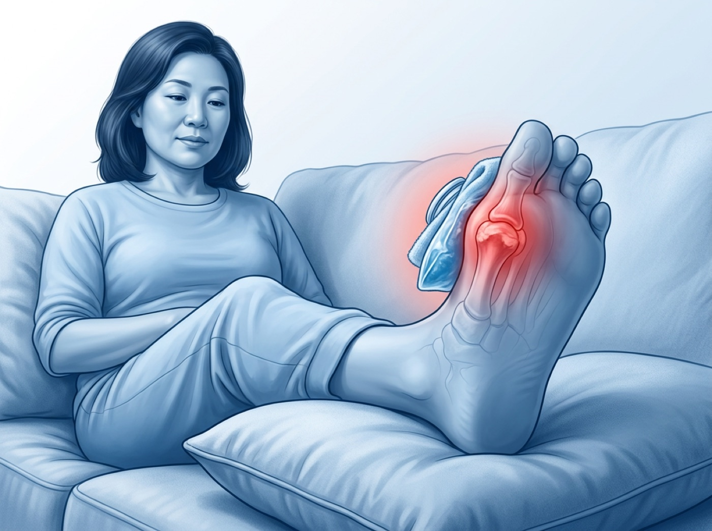

지금 발작이 왔다면 — 먼저 이 네 가지

1
빨리 알려주세요. 발작이 시작되면 되도록 빨리 병원에 알리고 진료를 받습니다.
2
관절을 쉬게 하세요. 다치지 않게 쓰지 말고, 냉찜질을 합니다.
3
핫팩·온찜질은 하지 마세요. 혈관이 넓어져 염증이 오히려 심해집니다.
4
먹던 요산 생성 억제제는 끊지 마세요. 그대로 드시면서 통증 약을 함께 씁니다.
아플 때 잰 요산 수치는 낮게 나올 수 있습니다. 그 수치 하나만으로 통풍이 아니라고 단정할 수 없어, 통증이 완전히 가라앉은 뒤에 다시 검사해 정확한 값을 확인합니다.
 약이 두 종류인 이유 — 불끄기 약과 청소 약
약이 두 종류인 이유 — 불끄기 약과 청소 약
| 비교 | 불끄기 약 (급성기 치료) | 청소 약 (요산 생성 억제제) |
|---|---|---|
| 무엇을 하나 | 지금의 통증과 염증을 가라앉힙니다 | 관절에 쌓인 요산 결정을 서서히 녹여냅니다 |
| 어떤 약 | 콜히친 · 소염진통제 · 스테로이드 | 알로푸리놀 · 페북소스타트 등 |
| 언제 먹나 | 발작이 왔을 때 짧게 — 발작이 가라앉으면 중단 | 매일 꾸준히 — 고혈압 약처럼 오래. 목표에 도달해도 대개 계속 (결정이 천천히 녹기 때문) |
 청소 약을 드실 때 — 목표 수치와 검사 간격
청소 약을 드실 때 — 목표 수치와 검사 간격
혈중 요산 목표
<6
mg/dL
통풍결절이 있으면
<5
mg/dL · 더 낮게 잡기도 합니다
약을 시작하거나 올리는 동안
2~5주
간격으로 검사
목표에 도달해 안정되면
6개월
간격으로 검사
증상만 보지 않고 수치를 확인하며 약을 조절하고, 콩팥·간 기능도 함께 봅니다.
- 청소 약을 시작한 초기에는 발작이 오히려 늘 수 있습니다. 약이 안 맞아서가 아니며, 그래서 발작을 막는 약을 최소 3~6개월 함께 드십니다.
- 알로푸리놀을 시작하기 전 유전자검사(HLA-B*58:01)를 권합니다. 약을 드시다 발진이 생기면 바로 알려 주세요.
 이런 신호가 오면 바로 오세요 — 참지 마시고 연락
이런 신호가 오면 바로 오세요 — 참지 마시고 연락
| 드시는 약 | 이런 신호가 오면 |
|---|---|
| 요산 생성 억제제알로푸리놀·페북소스타트 | 원인 모를 열 · 피부 발진(특히 번지거나 물집) · 입안이 헐음 · 눈 충혈 · 얼굴 부종 → 즉시 중단하고 오세요 |
| 콜히친 | 멈추지 않는 심한 설사, 쥐어짜는 듯한 복통, 근육 통증 |
| 소염진통제 | 검은 타르변 · 피를 토함(위장 출혈 — 어지럼이 없어도 즉시 응급실), 소변량이 크게 줄거나 몸이 붓는 경우(콩팥) |
| 스테로이드 | 혈당이 평소보다 높아짐, 잠이 안 오거나 기분 변화, 감염 징후 |
| 약과 상관없이 | 열이 나면서 여러 관절이 아프고 몸이 몹시 처질 때 — 감염 여부를 가려야 하므로 바로 오세요 |
 무엇을 먹고, 무엇을 줄일까
무엇을 먹고, 무엇을 줄일까
| 양을 조절하세요 | ||
|---|---|---|
| 콩 · 두부 · 버섯 · 시금치 — 식물성 퓨린은 발작을 늘리지 않습니다 | 붉은 고기는 살코기 위주로 적정량 나눠서 | 술 — 맥주가 가장 위험하지만 소주도 요산을 올립니다 |
| 저지방 우유 · 요구르트 | 내장류 · 진한 곰탕 국물은 피하세요 | 콜라 · 주스 · 에너지드링크 같은 단 음료 |
| 커피, 그리고 충분한 수분 | 해산물은 적당한 양으로. 등푸른생선은 심장에 좋으니 유지 | 굶는 다이어트 · 극단적 저탄고지는 발작을 부릅니다 — 체중은 천천히 |
※ 체리·비타민C 보충제로 통풍을 치료할 수는 없습니다. 음식 조절만으로 낮출 수 있는 요산에도 한계가 있어, 처방받은 약과 함께 가야 합니다.
약 고르는 기준(콩팥·심장 상황별)은 진료실 설명 자료 — 통풍: edu.gwanggyobarun.com/decks/endocrine/gout/